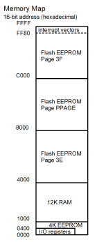

| Previous Section | Next Section | Index | Questions | Search the Text |
The MC9S12DP256B microcontroller contains 4096 bytes of EEPROM. The memory is arranged as 2048 words. Accessing a word at a non-aligned (odd) address requires two memory accesses.
For a detailed description of how the EEPROM is implemented and used, check the EETS4K Block Users Guide and the MC9S12DP256 Device Users Guide, appendix A. The microcontroller also has a 256K byte Flash memory which is very similar (in fact, the EEPROM is really a Flash memory) but not discussed in this text. Documentation for this memory is covered in the FTS256K Block Users Guide. Resource mapping is covered in the HCS12 V1.5 Core Users Guide in section 11 (module mapping control).
Two control registers are used to configure the EEPROM, INITEE and EPROT:
| EEPROM Configuration Registers | ||||||||
| Register | Bit 7 | Bit 6 | Bit 5 | Bit 4 | Bit 3 | Bit 2 | Bit 1 | Bit 0 |
|---|---|---|---|---|---|---|---|---|
| INITEE | EE15 | EE14 | EE13 | EE12 | 0 | 0 | 0 | EEON |
| EPROT | EPOPEN | NV6 | NV5 | NV4 | EPDIS | EP2 | EP1 | EP0 |
The base, or starting, address of EEPROM memory is set by the upper four bits of INITEE. The upper four bits of INITEE become the upper four bits of the EEPROM memory address and the lower 12 bits of the memory address determine the location within the EEPROM. The INITEE register allows placing the EEPROM memory bank in any 4k byte interval of the 64k byte address space. These bits are initially all zeroes, which places the EEPROM at addresses $0000 through $0FFF. Since the register bank occupies locations $0000 through $3FF and has a higher priority, normally only 3K of the EEPROM is accessible. The register can be written just once after reset, so the base address can be changed if it is desired to access the entire contents.
The EEON bit enables the EEPROM to be part of the address space. When this bit is zero, the EEPROM cannot be accessed and does not appear in the address space. Normally, and by default, it is one to allow EEPROM access.
The EPROT register is used to protect the EEPROM from inadvertent writing. The register is loaded at reset from the byte offset $FFD into the EEPROM. Since the EEPROM bytes are initially erased and have a value $FF, all of the bits in EPROT are 1 by default. After reset, the contents of the EPROT register can only be changed in ways that enable the protected region. It is important to not write to location $FFD in the EEPROM unless it is desire to permanently write protect the EEPROM. (OK, that's not quite true. A BDM debugger can be used to set all the EPROT bits to $FF and then write $FF to location $FFD.)
If EPOPEN is changed to a 0, then the EEPROM cannot be written. If EPDIS is changed to a 0, then EP2 through EP0 determine the range of addresses that are protected against writing:
| EPOPEN | EPDIS | EP2 | EP1 | EP0 | Protected Region (address offset into EEPROM) |
|---|---|---|---|---|---|
| 1 | 0 | 0 | 0 | 0 | $FC0 - $FFF (64 bytes) |
| 1 | 0 | 0 | 0 | 1 | $F80 - $FFF (128 bytes) |
| 1 | 0 | 0 | 1 | 0 | $F40 - $FFF (192 bytes) |
| 1 | 0 | 0 | 1 | 1 | $F00 - $FFF (256 bytes) |
| 1 | 0 | 1 | 0 | 0 | $EC0 - $FFF (320 bytes) |
| 1 | 0 | 1 | 0 | 1 | $E80 - $FFF (384 bytes) |
| 1 | 0 | 1 | 1 | 0 | $E40 - $FFF (448 bytes) |
| 1 | 0 | 1 | 1 | 1 | $E00 - $FFF (512 bytes) |
| 0 | X | X | X | X | Entire EEPROM |
| 1 | 1 | X | X | X | None |
There are two similar operations that can be performed on a memory location, erasing and programming. Erasing sets all the bits of the location to ones. For programming, one specifies the value to store in the location; however the programming operation can only change 1 bits to 0 bits. This means that if an EEPROM memory byte contains $F0, and it is desired to have it contain $E0, that value can be successfully programmed because it involves only changing a 1 bit to a 0 bit. However if it were desired to change it to $F1, the location would have to be erased first because programming would not change the least significant bit from 0 to 1.
In the 68HCS12, EEPROM is implemented using Flash memory with a small 4 byte sector size. In Flash memory, locations can only be programmed if they are erased, and entire sectors must be erased at a time. In addition, since the memory is word oriented, only aligned word memory locations can be programmed.
Programming and erasing are much slower operations than reading. Programming takes at least 46 microseconds while erasing a sector takes 20 milliseconds. Erasing the entire EEPROM, however, takes only 100 milliseconds. This means that erasing and writing the entire EEPROM can be done fairly quickly in about 1.5 seconds. Writing a single byte is very inefficient since this could require a sector erase followed by two word writes (to restore the other three, erased bytes).
The non-volatile memory effectively wears out with use. The EEPROM is guaranteed for 10,000 erase/write cycles and will retain data for a minimum of five years. If the memory is written 10 or fewer times (such as it would be if it contained a program in a deliverable control system) then the data lifetime is a minimum of 15 years.
Programming the EEPROM is somewhat easier in the 68HCS12 than it was in the 68HC12 and earlier microcontrollers because most of the operation is controlled by a state machine within the microcontroller. However it is strongly suggested that one study the Freescale manuals thoroughly before attempting to program the EEPROM. There are four programming registers:
| EEPROM Programming Registers | ||||||||
| Register | Bit 7 | Bit 6 | Bit 5 | Bit 4 | Bit 3 | Bit 2 | Bit 1 | Bit 0 |
|---|---|---|---|---|---|---|---|---|
| ECLKDIV | EDIVLD | PRDIV8 | EDIV5 | EDIV4 | EDIV3 | EDIV2 | EDIV1 | EDIV0 |
| ECNFG | CBEIE | CCIE | 0 | 0 | 0 | 0 | 0 | 0 |
| ESTAT | CBEIF | CCIF | PVIOL | ACCERR | 0 | BLANK | 0 | 0 |
| ECMD | 0 | CMDB6 | CMDB5 | 0 | 0 | CMDB2 | 0 | CMDB0 |
The first step in programming is to set the programmer clock divider using register ECLKDIV. The programmer clock must run at a rate of 150 kHz to 200 kHz. A programmable divider divides down the crystal clock (not the bus clock!). EDIV+1 is the divisor, and an additional divide by 8 can be incorporated by setting the PRDIV8 bit. The ECLKDIV register can only be written once. The EDIVLD bit, a read-only status bit, is set when the register is written. Programming is disabled unless the register has been written to since reset. With an 8 MHz crystal, a divisor of 40 is necessary, so EDIV should be 39 or $27.
For each programming operation, the CBEIF bit is checked to be 1 which means the programmer is ready to accept a command. Then the desired EEPROM location is written with the desired data. The EEPROM is not written at this point, but the address and data values are saved within the programmer. Next, the command is stored into the ECMD register. The CBEIF bit is then cleared by writing a 1 to it. This will start the operation. The programmer is ready for another operation when CBEIF is again 1, and the programmer is finished all operations when CCIF=1. During the course of programming, the EEPROM may not be accessed. Any error will be indicated by setting the PVIOL or ACCERR bits. These bits must be cleared before any programming command can be issued.
The following commands are valid:
An interrupt driven routine can be used to program the EEPROM. The interrupt enable bits CBEIE and CCIE correspond to the flag bits CBEIF and CCIF.
The following code sequence will write "BEADFACE" to the EEPROM at locations $400 through $403:
movb #$27 ECLKDIV ; Set clock divider
movw #$BEAD $400 ; Write BEAD to $400-$401
movb #$60 ECMD ; Sector Erase
bclr ESTAT #~$80 ; Start operation
p1: brclr ESTAT #$80 p1 ; wait for CBEIF to be set
movw #$FACE $402 ; Write FACE to $402-$403
movb #$20 ECMD ; Word Program
bclr ESTAT #~$80
p2: brclr ESTAT #$80 p2
The Flash and EEPROM memory are most often used for programs. This provides potentially a single chip solution for the application if the i/o capabilities of the microcontroller are sufficient. Since the EEPROM memory has a small sector erase size, it can also be used to hold data that changes on a very infrequent basis, such as configuration constants. When using an evaluation board, such as the Dragon12-Plus, the D-Bug12 program and boot loader are in the Flash memory, and are conveniently left in place. The EEPROM can be used to hold a program up to 3KB in size, or 4KB if the EEPROM or register bank is moved.
When external memory is used, the EEPROM is still useful to hold routines and tables that can be accessed in the minimal amount of time. The timing requirements of external memory tend to require clock stretch which slows these operations. The EEPROM can be accessed in minimal time.
There are also applications for memory that needs to be written once, or relatively infrequently by the program. This includes calibration data, elapsed time logging, and configuration setting that need to be preserved across power down cycles. Non-volatile, programmable memory typically has two failure modes. The first is that each successive programming operation takes an increasing amount of time to actually complete. Eventually the location fails to program. After each program operation, the location should be checked to make sure the operation was successful. The second failure mode can be more troublesome - a deterioration in data retention. The memory bits basically erase themselves over time. This seems to be the primary failure mode of the EEPROM (and Flash) memory in the 68HCS12. Keeping a checksum byte of the EEPROM data is the best way to detect this problem.
It is important to debug programs which will be writing the EEPROM thoroughly and in such a way that the EEPROM is not actually programmed. An errant program, repeatedly writing to an EEPROM location every 20 milliseconds, could destroy the EEPROM (and therefore the microcontroller) in 4 minutes!
The 256K flash memory in the MC9S12DP256 is designed to be programmed a very limited number of times. Thus it is only suitable for programs that do not change, except possibly for field upgrades. Other members of the HCS12 family, and recent revisions of the MC9S12DP256 such as the MC9S12DP256B have flash memory that can be reprogrammed thousands of times and are more useful for program development. A popular and inexpensive part, the MC9S12C32, has a 32K byte flash memory suitable for this purpose and no separate EEPROM . See The MC9S12C Family.
There are three internal addressable resources, the register block, the RAM, and the EEPROM. There is also a special debug memory, which is beyond the scope of this text. We have seen that the register block starts at location $0000, the internal RAM starts at location $1000, and the internal EEPROM starts at $0000. We have also seen that the starting location of EEPROM can be changed once after each reset by altering register INITEE. The same is true for the internal RAM and register block:
| Register | Bit 7 | Bit 6 | Bit 5 | Bit 4 | Bit 3 | Bit 2 | Bit 1 | Bit 0 |
|---|---|---|---|---|---|---|---|---|
| INITRM | RAM15 | RAM14 | RAM13 | RAM12 | RAM11 | 0 | 0 | RAMHAL |
| INITRG | 0 | REG14 | REG13 | REG12 | REG11 | 0 | 0 | 0 |
| INITEE | EE15 | EE14 | EE13 | EE12 | EE11 | 0 | 0 | EEON |
|
The starting location of the 12k byte RAM can be set by writing to INITRM. The RAM can be within any 16k byte address boundary, as set by the two most significant bits of INITRM. It will be in the first 12k bytes if RAMHAL=0 but will be in the final 12k bytes if RAMHAL=1. At reset the value is $01, so it is in the 16k address range $0000 to $3FFF, aligned to the end, occupying $1000-$3FFF. The other bits of INITRM are not used with this microcontroller. Other microcontrollers in the family have different size memories and may use additional or fewer bits to set the starting address. The starting address of the 1024 byte register block can be changed by writing to INITRG. The register block can also start at any 2k byte address boundary, but it must be in the first 32k bytes of the address space. Any instruction which changes one of these registers should be followed by a NOOP to give time for the change to occur. In case of conflicting addresses, the following precedence table is used:
|
 |
Different microcontrollers in the 68HCS12 family have different combinations of RAM and EEPROM on the chip. Status registers (not discussed here) can be examined by a program to determine what memory resources are available and possibly map the resources differently depending on the chip.
Continue with Scaled Integer Arithmetic.
Return to the Index.